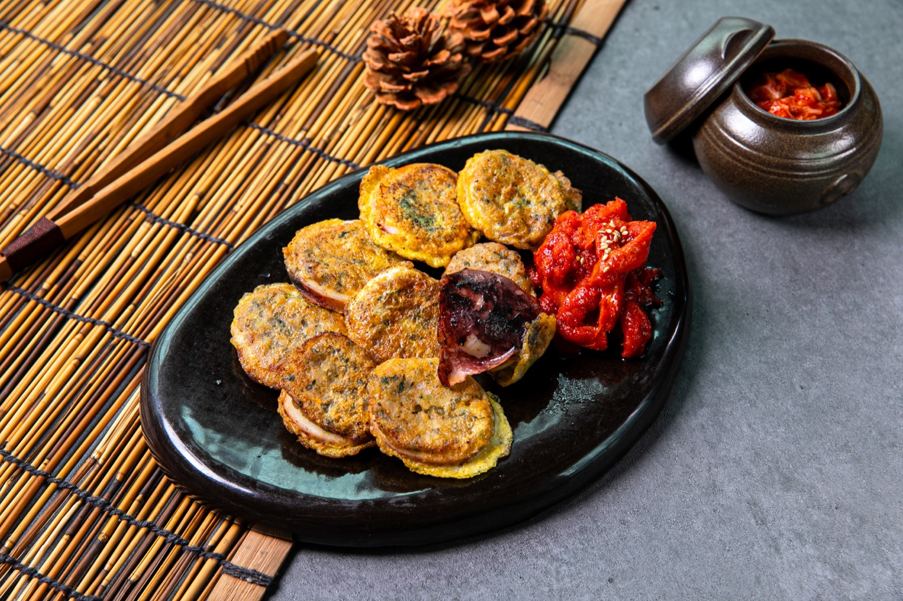
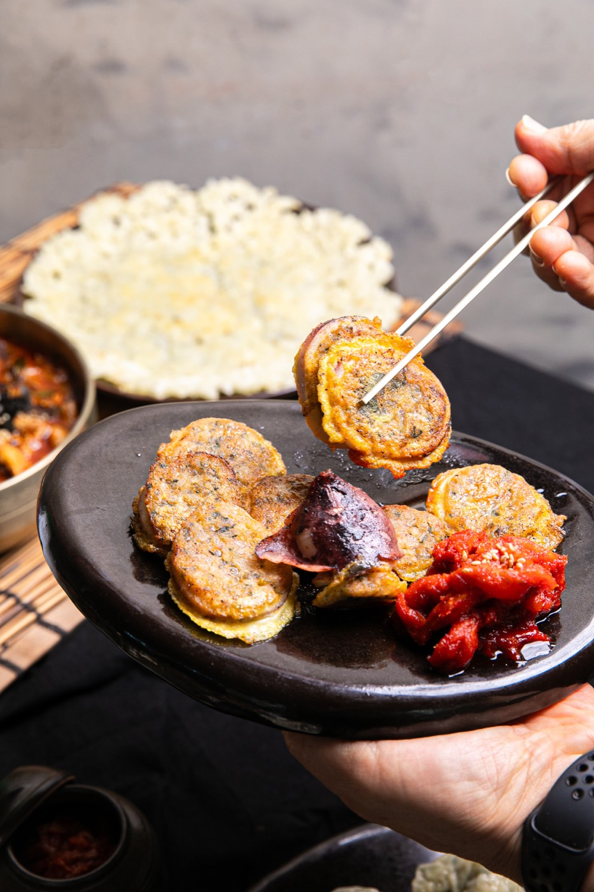

오징어순대는 강원도 바닷가 음식입니다. 강릉현대장칼국수 부산점은 오징어순대에 달걀옷을 입혀 지지고, 새콤달콤한 명태회무침을 곁들여 냅니다. 18,000원입니다.
오징어순대 한 점에 명태회무침을 얹어 한입에 드시면 고소함과 새콤함이 같이 느껴집니다.

국물 이야기
칼국수와 장국밥 국물에는 해물을 바짝 말려 아주 많은 양을 갈아 넣습니다. 그래서 국물 맛이 깊고 진하며, 국물만 떠먹어도 보약 한 그릇 먹은 듯 든든하다는 말을 듣습니다. 면은 매장에서 직접 뽑은 생면을 씁니다. 굵고 쫄깃한 생면이 진한 국물을 잘 머금습니다.
메뉴와 가격
방문 팁
- 월·화·목·금 10:30~24:00 (브레이크타임 15:00~17:00)
- 토·일 08:30~24:00 쉬지 않고 영업
- 매주 수요일 휴무, 라스트오더 23:30
- 동해선 송정역 2번 출구에서 833m, 송정해변 끝 회전교차로
- 주차, 포장, 배달, 단체, 유아의자 가능
함께 읽으면 좋은 글
- 누룽지 오징어순대 18,000원, 바삭한 누룽지 옷을 입힌 송정 별미
- 송정 막걸리 안주 맛집, 부산 생탁과 오징어순대·감자전
- 장칼국수 + 감자전 + 오징어순대, 송정에서 즐기는 강원도 한 상
- 전체 글 목록
가게 정보
| 상호 | 강릉현대장칼국수 부산점 |
|---|---|
| 주소 | 부산광역시 해운대구 송정중앙로 46 1층 (송정해변 끝 회전교차로) |
| 지하철 | 동해선 송정역 2번 출구에서 833m |
| 영업시간 | 월·화·목·금 10:30~24:00 (브레이크타임 15:00~17:00), 토·일 08:30~24:00, 라스트오더 23:30 |
| 휴무 | 매주 수요일 |
| 전화 | 0507-1376-6682 |
자주 묻는 질문
- 오징어순대에 무엇이 같이 나오나요?
- 명태회무침이 함께 나옵니다.
- 위치가 어디인가요?
- 부산광역시 해운대구 송정중앙로 46 1층, 송정해변 끝 회전교차로입니다. 동해선 송정역 2번 출구에서 833m입니다.
- 영업시간은요?
- 월·화·목·금 10:30~24:00(브레이크타임 15:00~17:00), 토·일 08:30~24:00, 매주 수요일 휴무입니다.